武甲山
| 日付 | 2007年3月21日（水） |
|---|---|
| 山域 | 奥武蔵 |
| メンバー | 単独 |
| 山行形態 | 日帰り |
| アクセス | 電車 |
| ルート (Map) | 横瀬駅→一の鳥居→武甲山→浦山口駅 |
古くから信仰を集めている秩父のシンボル・武甲山に行く。
7:43 横瀬駅到着。標高250m。
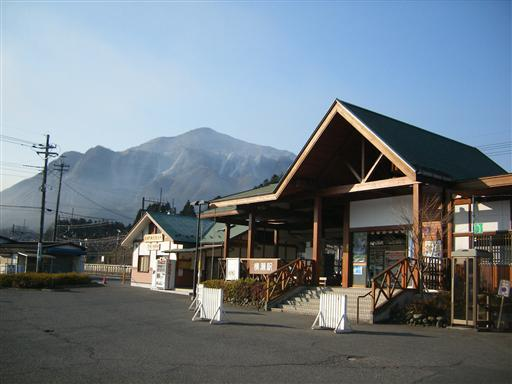
目の前に異様な山容の武甲山が聳える。
白く見える部分は石灰石が削られた跡。
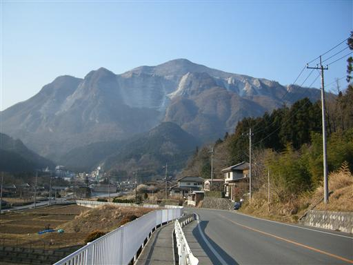
登山道に向かう車道は、石灰石採掘用のダンプカーが
多数往来していて砂埃が激しい。
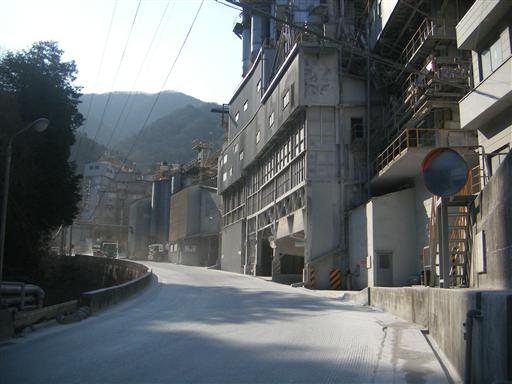
武甲山登山道入口に到着。
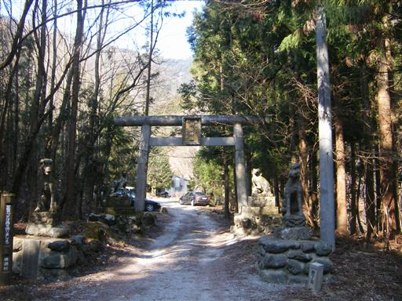
変わった形をした狛犬。
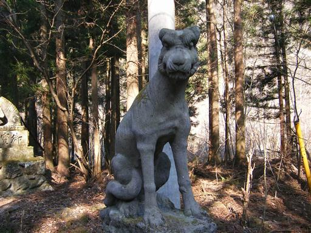
斜面には白い石たくさん落ちている。
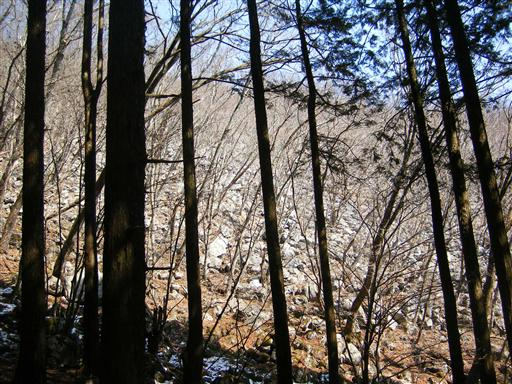
山頂直下の御嶽神社。
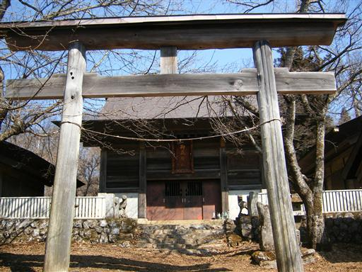
10:19 武甲山山頂到着。標高1304m。
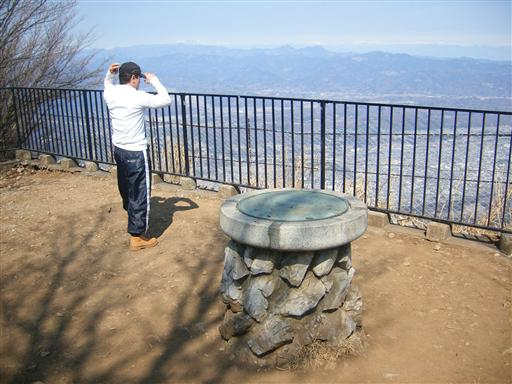
展望台からの眺め。
秩父の街の奥には上越国境稜線の白い山々が見える。
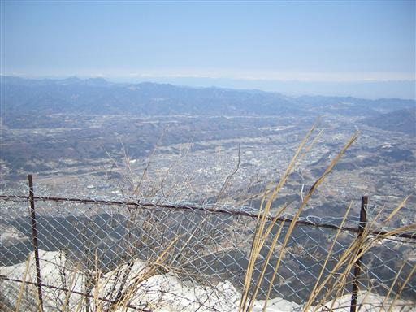
山頂がぎざぎざの形をした両神山も近くに望める。
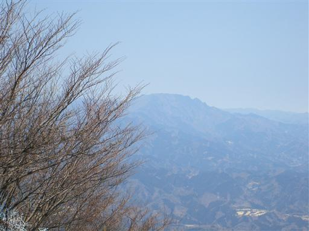
下を覗くと、石灰石採掘現場が見える。
山頂まで工事の音が響きつづけている。
いずれこの山はなくなってしまうのかもしれない。
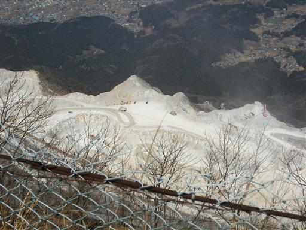
10:50 山頂出発。
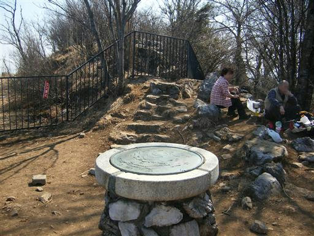
下山道から奥多摩の山並を望む。
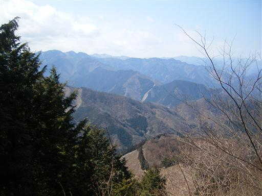
登山道にはいろいろな看板があるので面白い。
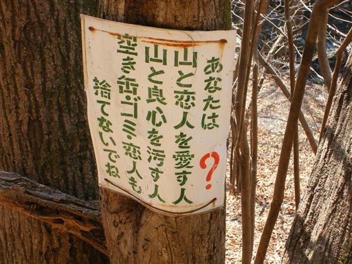
特に名はついていないが、きれいな滝があった。
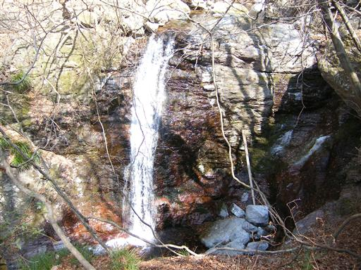
12:28 浦山口駅到着。標高240m。
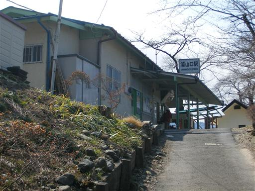
西武秩父駅からの眺め。なぜか観光客が非常に多い。
背後に見えるのは武甲山。
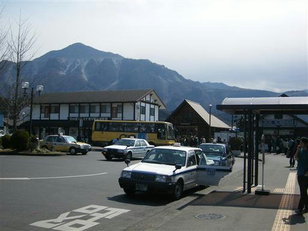
他の山行記録